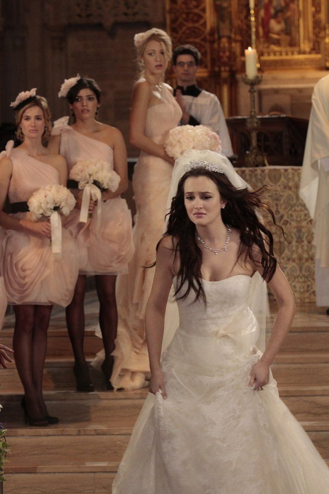
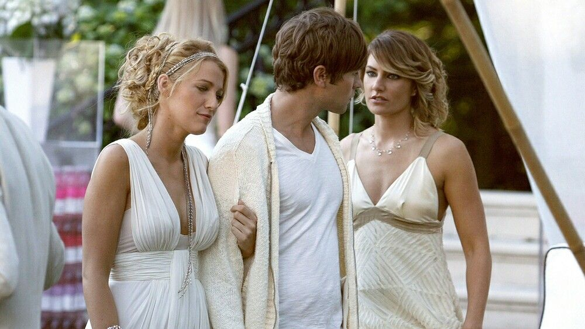
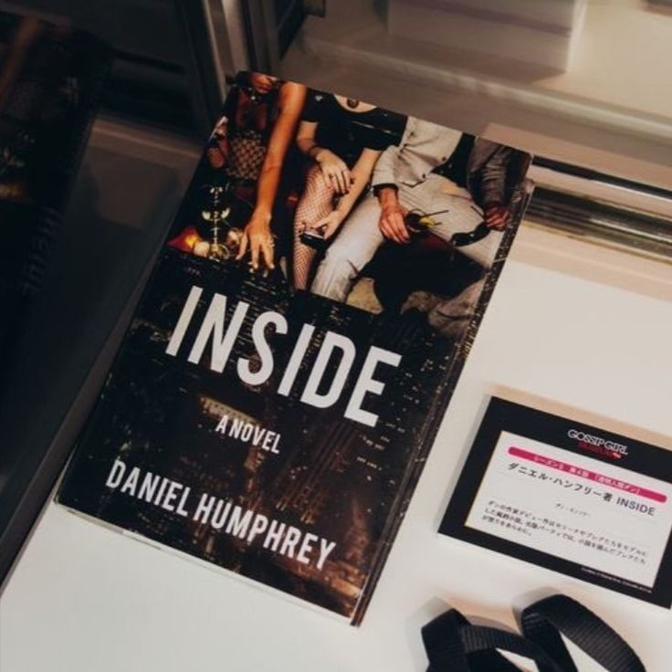

Spotted:Serena Van der Woodsen

Spotted con bolso en mano Serena Van der Woodsen, en la Grand Central Terminal. La IT girl esta de vuelta? xoxo, gossip girl.
Queen B destronada?

Parece que los escalones del Met están un poco fríos hoy. B pierde su corona frente a la nueva reina del Upper East Side. ¿Cuánto durará el exilio? xoxo, gossip girl.
Chuck Bass enamorado?

Spotted: Chuck Bass entrando al Palace Hotel con flores en mano. ¿El chico malo del Upper East Side finalmente cayó rendido por Blair? Eso sí que nadie lo vio venir. xoxo, gossip girl.
No tan Lonley Boy

El chico de Brooklyn ya no parece tan perdido entre la élite. Dan Humphrey empieza a disfrutar demasiado de los privilegios del Upper East Side. Lonely Boy ya no está tan solo. xoxo, gossip girl.
El regreso de Georgina Sparks
Justo cuando Manhattan parecía en paz, Georgina Sparks vuelve con información capaz de destruir reputaciones. Porque donde aparece Georgina, el caos nunca tarda en llegar. xoxo, gossip girl.
¿Peligra la Boda real?

Blair Waldorf está a punto de convertirse en princesa, pero un corazón dividido podría arruinar el cuento de hadas. ¿Elegirá la corona o a Chuck Bass? xoxo, gossip girl.
La traición más grande

Antes de desaparecer de Manhattan, Serena Van der Woodsen pasó una noche con el novio de su mejor amiga. Blair Waldorf podría perdonar muchas cosas… pero nunca una traición así. xoxo, gossip girl.
Serena tras las rejas?

Spotted: Serena Van der Woodsen entrando a una comisaría escoltada por la policía. Entre secretos, mentiras y una noche que salió mal, parece que la chica dorada del Upper East Side finalmente no pudo escapar de las consecuencias. xoxo, gossip girl.
No más Golden boy?

Golden boy no more? Nate Archibald queda atrapado entre escándalos familiares, deudas y romances peligrosos. Parece que ser el chico perfecto del Upper East Side ya no alcanza para mantener las apariencias. xoxo, gossip girl.
Adiós Bart Bass?

Manhattan está de luto. Bart Bass, uno de los hombres más poderosos del Upper East Side, muere en un inesperado accidente automovilístico. Pero en esta ciudad, incluso las despedidas esconden secretos. xoxo, gossip girl.
Lily y Rufus: un hijo secreto

Justo cuando parecía que Lily y Rufus finalmente tendrían su final feliz, un viejo secreto sale a la luz: tuvieron un hijo juntos y lo dieron en adopción años atrás. Parece que el pasado nunca abandona el Upper East Side. xoxo, gossip girl.
"Inside", el manual para quedar "outside"?

Dan Humphrey publica un libro inspirado en la élite del Upper East Side y nadie sale bien parado. Amigos, romances y secretos quedan expuestos frente a todo Manhattan. Parece que Lonely Boy estuvo observando más de la cuenta. xoxo, gossip girl.